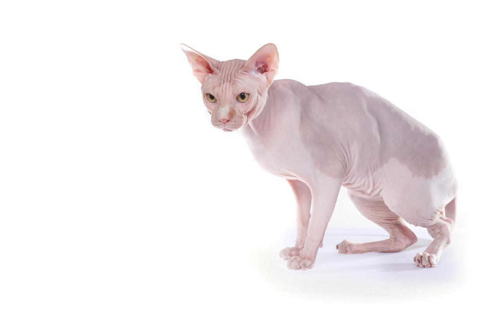

Pequeño felino estadounidense originario de Hawái que apareció por primera vez en el año 2002. Al principio se pensó que era fruto de una mutación natural en una camada salvaje nacida en Hawái que provocaba la ausencia total de pelo, posteriormente se pensó que habían aparecido por el cruce entre un gato donskoy y un gato sphynx, pero fue más recientemente cuando se analizó el ADN y se llegó a la conclusión de que se trata de una mutación natural que se produce en el gato sphynx.
Es un felino musculoso, ancho y de tamaño mediano, que puede pesar entre 3 y 6 kg y medir de 17 a 23 cm. Las patas traseras de estos gatos son más largas que las delanteras, lo que le otorga un movimiento peculiar al caminar. La musculatura de estos gatos está muy bien definida, lo que se aprecia todavía más al carecer de pelo. Tienen un pecho ancho y una cola larga y curvada. La cabeza tiene forma cónica, con unas orejas grandes y con extremos curvos y unos ojos almendrados y de gran tamaño. La nariz es recta y el mentón y los pómulos están bien definidos.

Carece de pelo y de folículos pilosos, teniendo una piel gomosa al tacto, por lo que el color de estos gatos será el de su piel, que generalmente es blanca, negra o crema.

Muy cariñoso, sociable, inteligente, enérgico y juguetón. Adora pasar tiempo con sus cuidadores y disfruta mucho de ser el centro de atención. Además, busca estar siempre con el cuidador con el que más vínculo haya obtenido, y es que estos gatos tienden a tener una persona favorita. Al ser sociable, tolera mejor que otras razas las visitas al hogar, así como la introducción de nuevos animales, siempre que se haga correctamente. Siempre está dispuesto a jugar, por lo que no duda en provocar y solicitar juegos con los suyos. No le gusta estar solo en casa.

La ausencia de pelo perjudica mucho a su piel, que se encuentra totalmente expuesta al sol, al frío, las alergias y a los patógenos. Para evitar que se quemen, se les debe aplicar protector solar. En los meses más fríos, la casa debe encontrarse a una buena temperatura y ponerles abrigos para gatos o mantas para que no sufran las consecuencias de las bajas temperaturas. Para higienizar su superficie corporal debido a que se acumula mucha grasa y detritus al carecer de pelo, se les puede pasar toallitas limpiadoras para gatos o paños húmedos, luego es imprescindibles secarlos para evitar humedades y que cojan frío. La higiene de las orejas, de los ojos y de los dientes debe ser como la de cualquier otro gato para prevenir infecciones e inflamaciones que afecten a dichas localizaciones corporales. Estos gatos, además, carecen de pestañas, de manera que la higiene de los ojos no puede ser olvidada para prevenir afectaciones oculares como las conjuntivitis. Al ser tan energéticos y carecer de pelo, sus necesidades energéticas son mayores y, por tanto, estos gatos requieren mayores cantidades de alimento al día. El alimento debe ser completo y destinado para la especie felina, así como dado en varias tomas con agua siempre a su disposición.

Pueden vivir hasta 17 años sin problema, siempre y cuando no sean ejemplares que hayan sufrido los problemas de salud derivados de la endogamia por la poca disponibilidad de ejemplares por el mundo. Si no es el caso, estos gatos pueden tener una buena salud, sin olvidar que hay que tener mucho cuidado con los problemas dermatológicos, ya que por las características de su piel pueden ser tendentes a desarrollarlos.